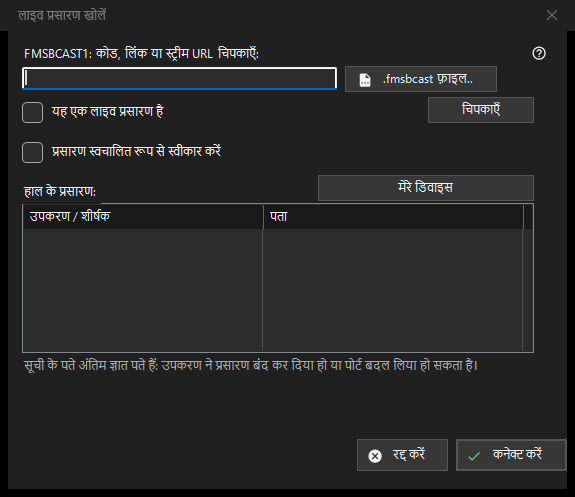

लाइव प्रसारण
यह किस लिए है
FMSBCAST1: कोड, लिंक या स्ट्रीम URL पेस्ट करें या .fmsbcast फ़ाइल चुनें। साधारण URL को लाइव तभी चिह्नित करें जब स्रोत लाइव हो; अन्यथा वह ऑन-डिमांड मीडिया की तरह खुलेगा। कनेक्ट करें दबाएँ और माँगे जाने पर दर्शक पासवर्ड दें। प्रसारक रुकने या पोर्ट बदलने पर हाल का पता काम नहीं कर सकता। स्वचालित Cast स्वीकृति अलग स्पष्ट विकल्प है।


इस क्रम में
FMSBCAST1: कोड, लिंक या स्ट्रीम URL पेस्ट करें या .fmsbcast फ़ाइल चुनें। साधारण URL को लाइव तभी चिह्नित करें जब स्रोत लाइव हो; अन्यथा वह ऑन-डिमांड मीडिया की तरह खुलेगा। कनेक्ट करें दबाएँ और माँगे जाने पर दर्शक पासवर्ड दें। प्रसारक रुकने या पोर्ट बदलने पर हाल का पता काम नहीं कर सकता। स्वचालित Cast स्वीकृति अलग स्पष्ट विकल्प है।
तत्व
FMSBCAST1: / .fmsbcast
FMSBCAST1: कोड, लिंक या स्ट्रीम URL पेस्ट करें या .fmsbcast फ़ाइल चुनें। साधारण URL को लाइव तभी चिह्नित करें जब स्रोत लाइव हो; अन्यथा वह ऑन-डिमांड मीडिया की तरह खुलेगा। कनेक्ट करें दबाएँ और माँगे जाने पर दर्शक पासवर्ड दें। प्रसारक रुकने या पोर्ट बदलने पर हाल का पता काम नहीं कर सकता। स्वचालित Cast स्वीकृति अलग स्पष्ट विकल्प है।
प्रबंधक सेटिंग · SFTP साझाकरण सेटिंग · एक्सचेंज सर्वर सेटिंग